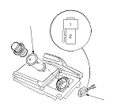

Cigarette Lighter Test/Replacement
Remove the center console.
Disconnect the 2P connector (A) from the cigarette lighter (B).
Inspect the connector terminals to be sure they are all making good contact.
If the terminals are bent, loose or corroded, repair them as necessary, and recheck the system.
If the terminals look OK, go to
Step 4
.
Turn the ignition switch ACC (I), and check for voltage between the No. 1 and No. 2 terminals.
If there is no battery voltage, check for:
-
Blown No. 9 (15 A) fuse in the under-dash fuse/relay box.
-
Poor ground (G506).
-
An open in the WHT/RED or BLK wire.
